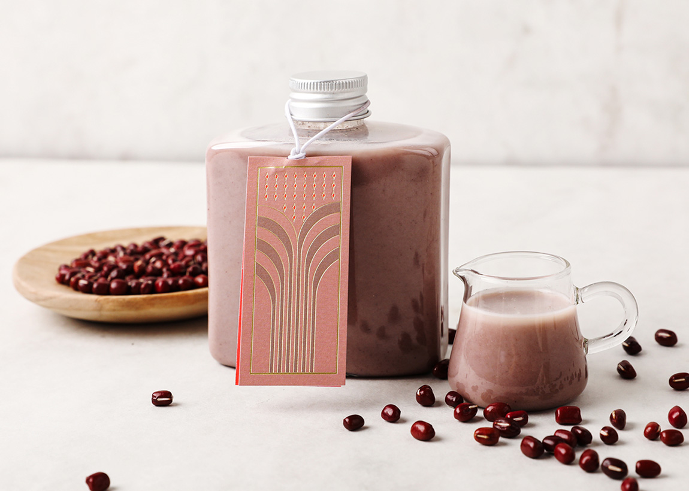

팥 라떼
부드럽고 고소한 우유에 달콤한 팥이 어우러진 따뜻한 힐링 한 잔, 집에서도 쉽게 즐기는 전통 디저트입니다!
#디저트
#홈카페
#겨울간식
#달달한음료

준비시간
1
분
조리시간
3
분
인분수
2
개
📋 영양정보 알아보기
▼
레시피 영양정보
칼로리(kcal)
: 172
탄수화물(g)
: 16.1
단백질(g)
: 5.2
총 지방(g)
: 6.3
포화지방(g)
: 6.3
트랜스지방(g)
: 0
나트륨(mg)
: 90
※ 해당 수치는 1잔 기준이며 재료·방법에 따라 다를 수 있습니다.
재료
팥양갱 3개
우유 1L
콩가루 1큰술
소금 2꼬집
얼음
만드는 방법
믹서기에 우유를 붓고, 양갱과 콩가루 소금 한꼬집을 넣어주세요.
컵에 얼음을 놓고 시원하게 마십니다.
← 레시피 목록으로 돌아가기